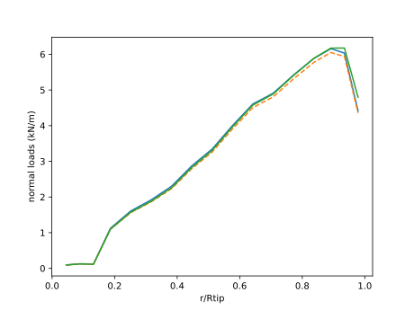
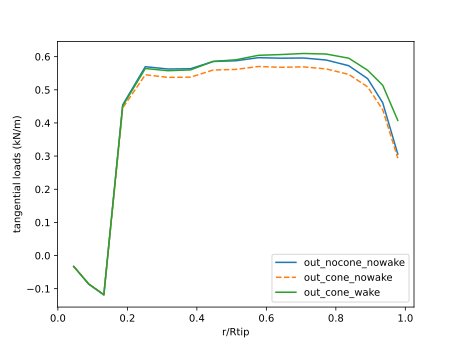
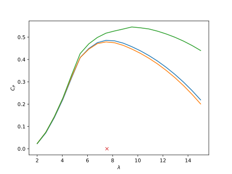
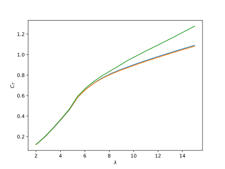
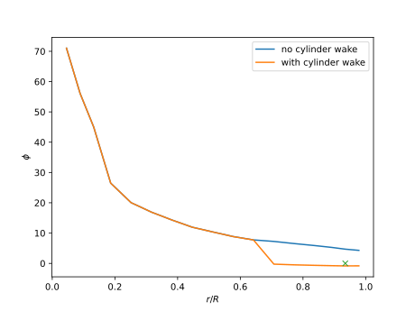
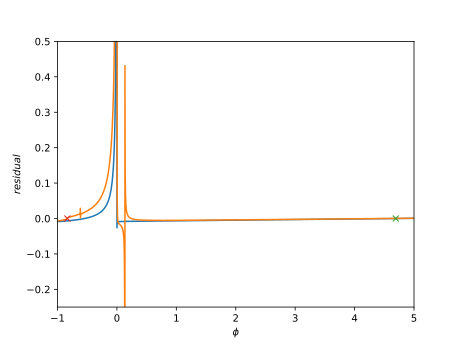

Examples using the cylinder wake model
We provide examples using the wake model, in addition with supplemental material to understand the behavior of CCBlade when the wake model is on.
Useful link: theory on the cylinder wake model.
Example 1: coned rotor
We first consider a simple rotor with straight blades under various coning angles. As the coning increases, we expect that the radial flow component (which is neglected in the standard BEM) plays an increasingly important role.
Let us use the same turbine as in the other examples.
Rhub = 1.5
Rtip = 63.0
B = 3
hubHt = 90.0
r = [2.8667, 5.6000, 8.3333, 11.7500, 15.8500, 19.9500, 24.0500,
28.1500, 32.2500, 36.3500, 40.4500, 44.5500, 48.6500, 52.7500,
56.1667, 58.9000, 61.6333]
chord = [3.542, 3.854, 4.167, 4.557, 4.652, 4.458, 4.249, 4.007, 3.748,
3.502, 3.256, 3.010, 2.764, 2.518, 2.313, 2.086, 1.419]
theta = pi/180*[13.308, 13.308, 13.308, 13.308, 11.480, 10.162, 9.011, 7.795,
6.544, 5.361, 4.188, 3.125, 2.319, 1.526, 0.863, 0.370, 0.106]
# Define airfoils. In this case we have 8 different airfoils that we load into an array.
# These airfoils are defined in files.
aftypes = Array{AlphaAF}(undef, 8)
aftypes[1] = AlphaAF("data/Cylinder1.dat", radians=false)
aftypes[2] = AlphaAF("data/Cylinder2.dat", radians=false)
aftypes[3] = AlphaAF("data/DU40_A17.dat", radians=false)
aftypes[4] = AlphaAF("data/DU35_A17.dat", radians=false)
aftypes[5] = AlphaAF("data/DU30_A17.dat", radians=false)
aftypes[6] = AlphaAF("data/DU25_A17.dat", radians=false)
aftypes[7] = AlphaAF("data/DU21_A17.dat", radians=false)
aftypes[8] = AlphaAF("data/NACA64_A17.dat", radians=false)
# indices correspond to which airfoil is used at which station
af_idx = [1, 1, 2, 3, 4, 4, 5, 6, 6, 7, 7, 8, 8, 8, 8, 8, 8]
# create airfoil array
airfoils = aftypes[af_idx]The main parameters that we want to explore the influence of are:
precone = 10.0*pi/180 #the original value is 2.5 (negtive means forward)
tilt = 0.0*pi/180 #the original value is 5.0 (positive means upwards)
yaw = 0.0*pi/180
shearExp = 0.0
sections = Section.(r, chord, theta, airfoils)
sections_coned = Section.(r, chord, theta, airfoils, precone)The response to shear will also differ between the standard BEM and the one working with the wake model.
We also define common operating conditions.
Vinf = 10.0
tsr = 7.55
rotorR = Rtip*cos(precone)
Omega = Vinf*tsr/rotorR
azimuth = 0.0*pi/180
rho = 1.225
pitch = 0.0Rotor 1
As a reference, we will use the unconed rotor. Note the keyword argument wakeCyl to specify wheher or not you want to activate the wake model. If false, the standard BEM routines are used.
rotor_nocone_nowake = Rotor(Rhub, Rtip, B; precone=0.0, turbine=true, wakeCyl=false)
op = windturbine_op.(Vinf, Vinf*tsr/Rtip, pitch, r, 0.0, yaw, tilt, azimuth, hubHt, shearExp, rho)
out_nocone_nowake = solve.(Ref(rotor_nocone_nowake), sections, op)Rotor 2
The second rotor to compare with has some precone but does not use the wake model.
rotor_cone_nowake = Rotor(Rhub, Rtip, B; precone=precone, turbine=true, wakeCyl=false)
op = windturbine_op.(Vinf, Omega, pitch, r, precone, yaw, tilt, azimuth, hubHt, shearExp, rho)
out_cone_nowake = solve.(Ref(rotor_cone_nowake), sections_coned, op)Rotor 3
The third rotor has precone and uses the wake model.
rotor_cone_wake = Rotor(Rhub, Rtip, B; precone=precone, turbine=true, wakeCyl=true)
op = windturbine_op.(Vinf, Omega, pitch, r, precone, yaw, tilt, azimuth, hubHt, shearExp, rho)
out_cone_wake = solve.(Ref(rotor_cone_wake), sections_coned, op)Comparison
figure()
plot(r/Rtip, out_nocone_nowake.Np/1e3)
plot(r/Rtip, out_cone_nowake.Np/1e3,"--")
plot(r/Rtip, out_cone_wake.Np/1e3)
xlabel("r/Rtip")
ylabel("normal loads (kN/m)")
savefig("wakeEx1_Np.svg") # hide
figure()
plot(r/Rtip, out_nocone_nowake.Tp/1e3)
plot(r/Rtip, out_cone_nowake.Tp/1e3,"--")
plot(r/Rtip, out_cone_wake.Tp/1e3)
xlabel("r/Rtip")
ylabel("tangential loads (kN/m)")
legend(["out_nocone_nowake", "out_cone_nowake", "out_cone_wake"])
T1, Q1 = thrusttorque(rotor_nocone_nowake, sections, out_nocone_nowake)
T2, Q2 = thrusttorque(rotor_cone_nowake, sections, out_cone_nowake)
T3, Q3 = thrusttorque(rotor_cone_wake, sections, out_cone_wake)
println("$T1, $Q1")
println("$T2, $Q2")
println("$T3, $Q3")
cpvec_nocone_nowake, ctvec_nocone_nowake, _ = nondim(T1, Q1, Vinf, Vinf*tsr/Rtip, rho, rotor_nocone_nowake, "windturbine")
cpvec_cone_nowake, ctvec_cone_nowake, _ = nondim(T2, Q2, Vinf, Omega, rho, rotor_cone_nowake, "windturbine")
cpvec_cone_wake, ctvec_cone_wake, _ = nondim(T3, Q3, Vinf, Omega, rho, rotor_cone_wake, "windturbine")
println("$cpvec_nocone_nowake, $ctvec_nocone_nowake")
println("$cpvec_cone_nowake, $ctvec_cone_nowake")
println("$cpvec_cone_wake, $ctvec_cone_wake")596362.6764005604, 3.0961228994485764e6
574706.8127531763, 2.957669645494895e6
595994.7088939463, 3.21121158947542e6
0.4858335798189455, 0.7808603849191362
0.48591983245404935, 0.775901091563111
0.5275746058756685, 0.8046414883814089 
Let's compare CP cuves:
The wake model gives a lot more CP... is that correct?? Need data to validate this?
ntsr = 20 # number of tip-speed ratios
tsrvec = range(2, stop=15, length=ntsr)
cpvec_nocone_nowake = zeros(ntsr) # initialize arrays
ctvec_nocone_nowake = zeros(ntsr)
cpvec_cone_nowake = zeros(ntsr)
ctvec_cone_nowake = zeros(ntsr)
cpvec_cone_wake = zeros(ntsr)
ctvec_cone_wake = zeros(ntsr)
#azangles = pi/180*[0.0, 90.0, 180.0, 270.0]
azangles = [0.0,]
# figure()
for i = 1:ntsr
#-1-
omega = Vinf*tsrvec[i]/Rtip
ops = windturbine_op.(Vinf, omega, pitch, r, 0.0, yaw, tilt, azangles', hubHt, shearExp, rho)
outs1 = solve.(Ref(rotor_nocone_nowake), sections, ops)
T, Q = thrusttorque(rotor_nocone_nowake, sections, outs1)
cpvec_nocone_nowake[i], ctvec_nocone_nowake[i], _ = nondim(T, Q, Vinf, omega, rho, rotor_nocone_nowake, "windturbine")
#-2-
omega = Vinf*tsrvec[i]/rotorR
ops = windturbine_op.(Vinf, omega, pitch, r, precone, yaw, tilt, azangles', hubHt, shearExp, rho)
outs2 = solve.(Ref(rotor_cone_nowake), sections_coned, ops)
T, Q = thrusttorque(rotor_cone_nowake, sections_coned, outs2)
cpvec_cone_nowake[i], ctvec_cone_nowake[i], _ = nondim(T, Q, Vinf, omega, rho, rotor_cone_nowake, "windturbine")
#-3-
omega = Vinf*tsrvec[i]/rotorR
ops = windturbine_op.(Vinf, omega, pitch, r, precone, yaw, tilt, azangles', hubHt, shearExp, rho)
outs3 = solve.(Ref(rotor_cone_wake), sections_coned, ops)
T, Q = thrusttorque(rotor_cone_wake, sections_coned, outs3)
cpvec_cone_wake[i], ctvec_cone_wake[i], _ = nondim(T, Q, Vinf, omega, rho, rotor_cone_wake, "windturbine")
end
figure()
plot(tsrvec,cpvec_nocone_nowake)
plot(tsrvec,cpvec_cone_nowake)
plot(tsrvec,cpvec_cone_wake)
plot(tsr,0.0,"x")
xlabel(L"\lambda")
ylabel(L"C_P")
figure()
plot(tsrvec,ctvec_nocone_nowake)
plot(tsrvec,ctvec_cone_nowake)
plot(tsrvec,ctvec_cone_wake)
xlabel(L"\lambda")
ylabel(L"C_T") 
A glitch with negative cone?
The residual seem not well behaved. What about starting up the solver in the center of the interval, instead of close to 0?
#CHOOSE A SPANWISE LOCATION index
isp = length(r)-1
#negative precone
precone = -2.5*pi/180
#recompute what we need:
sections = Section.(r, chord, theta, airfoils, precone)
rotor_nowake = Rotor(Rhub, Rtip, B; precone=precone, turbine=true, wakeCyl=false)
rotor_wake = Rotor(Rhub, Rtip, B; precone=precone, turbine=true, wakeCyl=true)
rotorR = Rtip*cos(precone)
Omega = Vinf*tsr/rotorR
op = windturbine_op.(Vinf, Omega, pitch, r, precone, yaw, tilt, azimuth, hubHt, shearExp, rho)
# -- solve --
out_nowake = solve.(Ref(rotor_nowake), sections, op)
out_wake = solve.(Ref(rotor_wake), sections, op)
figure()
plot(r/Rtip, out_nowake.phi.*180. /pi)
plot(r/Rtip, out_wake.phi.*180. /pi)
plot(r[isp]/Rtip, 0.,"x") #THIS IS THE LOCAATION WE CHOSE FOR LOOKING AT RESIDUALS
xlabel(L"r/R")
ylabel(L"\phi")
legend(["no cylinder wake", "with cylinder wake"])
# -- residual --
#creating phi vector refined near 0
nn = 1000
p1 = range(-180.,-1.,length=100)
p2 = range(-1,1.,length=nn)
phi = vcat(p1[1:end-1],p2,-p1[end-1:-1:1])
Res_wake = zero(phi)
Res_nowake = zero(phi)
# compute and plot the residual
for i =1:length(phi)
Res_nowake[i] = CCBlade.residual(phi[i].* pi/180, rotor_nowake, sections[isp], op[isp])[1]
Res_wake[i] = CCBlade.residual(phi[i].* pi/180, rotor_wake, sections[isp], op[isp])[1]
end
figure()
plot(phi,Res_nowake)
plot(phi,Res_wake)
plot(out_nowake[isp].phi.* 180/pi, 0.,"x")
plot(out_wake[isp].phi.* 180/pi, 0.,"x")
xlabel(L"\phi")
ylabel(L"residual")
ylim([-.25,0.5])
xlim([-1,5]) 
Example 2: coned rotor with shear and tilt
TODO
Example 3: influence of yaw
TODO
Example 4: rotor with curved blades
TODO